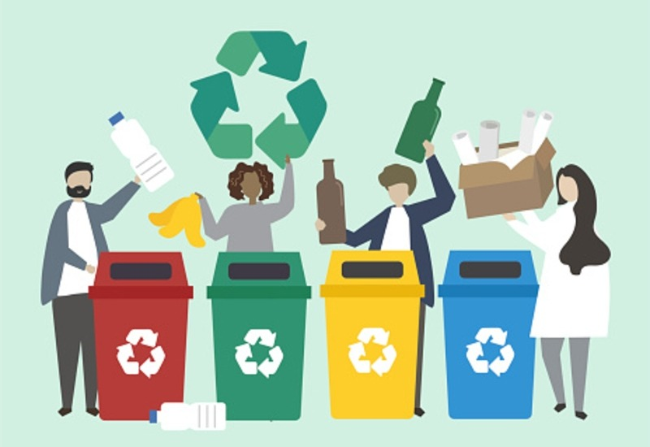

How Do I Recycle? Common Recyclables

Paper/Cardboard
Paper makes up 23 percent of municipal solid waste (trash) generated each year, more than any other material. Americans recycled about 68 percent of the paper they used in 2018. This recovered paper is used to make new paper products, which saves trees and other natural resources. Most community or office recycling programs accept paper and paper products. Check what your community or office program accepts before you put it in the bin. Look for products that are made from recycled paper when you shop. Better yet, consider if you really need to print in the first place.
Below are answers to frequently asked questions on paper and cardboard products. While general answers are provided, your local program may have different rules. Check with your local recycling program to learn if they accept these items.
Can I recycle newspapers?
Yes, newspapers can be recycled.
Can I recycle magazines?
Yes, magazines can be recycled.
Can I recycle pizza boxes?
Yes! Pizza boxes can be recycled, even if they have grease in them. Make sure to remove any food scraps from the box and flatten it before placing it in the bin.
Can I recycle mail?
Yes! Even envelopes with plastic windows can be recycled.
Plastics
More than 35 million tons of plastics were generated in the United States in 2018 and only 8.7 percent was recycled. Some types of plastics are not accepted in community recycling programs. Check with your local recycling program to find out which types of plastic they accept. When possible, purchase products made from recycled plastic materials.
Below are frequent questions on plastic products. While general answers are provided, your local program may have different rules. Make sure to check with your local recycling provider to learn if they accept these items.
Can I recycle plastic bags, wraps and films?
These items are recyclable, but they cannot go in your household bin. Retail and grocery stores often accept these materials for recycling. If necessary, be sure to cut off the sealable zippers from sandwich bags before recycling them. Visit the Plastic Film Recycling website or Earth911 to find a location near you that recycles plastic bags and plastic wrap/film.
Can plastic bottles and caps be recycled?
Yes, typically the caps and labels can be left on the bottles as well.
Can polystyrene foam (styrofoam) be recycled?
Very few localities accept styrofoam in curbside recycling. Check Earth911 to learn where you can drop off your styrofoam for it to be recycled.
Can plastic containers, cups and utensils be recycled?
It depends on what types of plastic the containers and cups are made of and whether your local program accepts them. Items with food debris cannot be recycled. Plastic utensils also cannot be recycled.